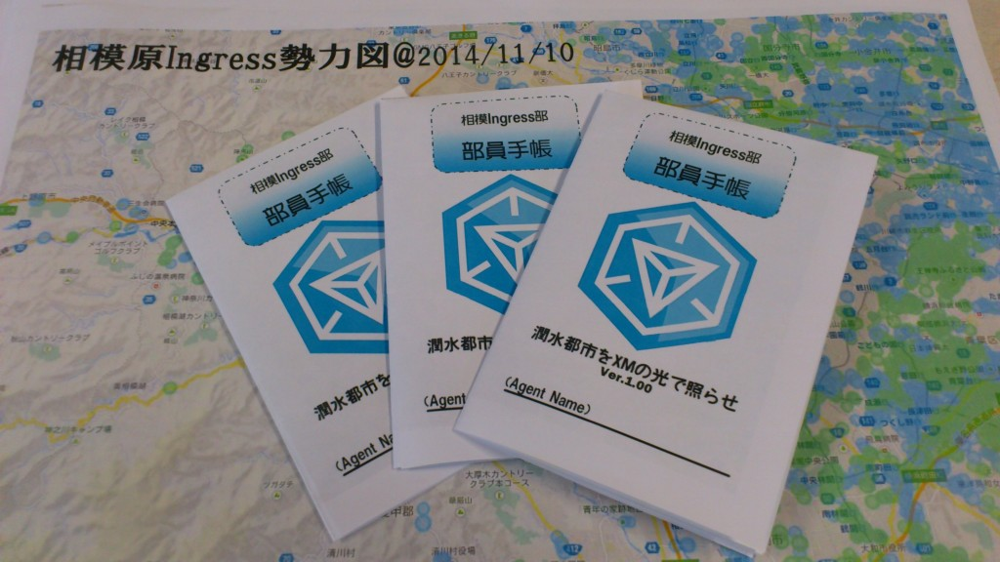
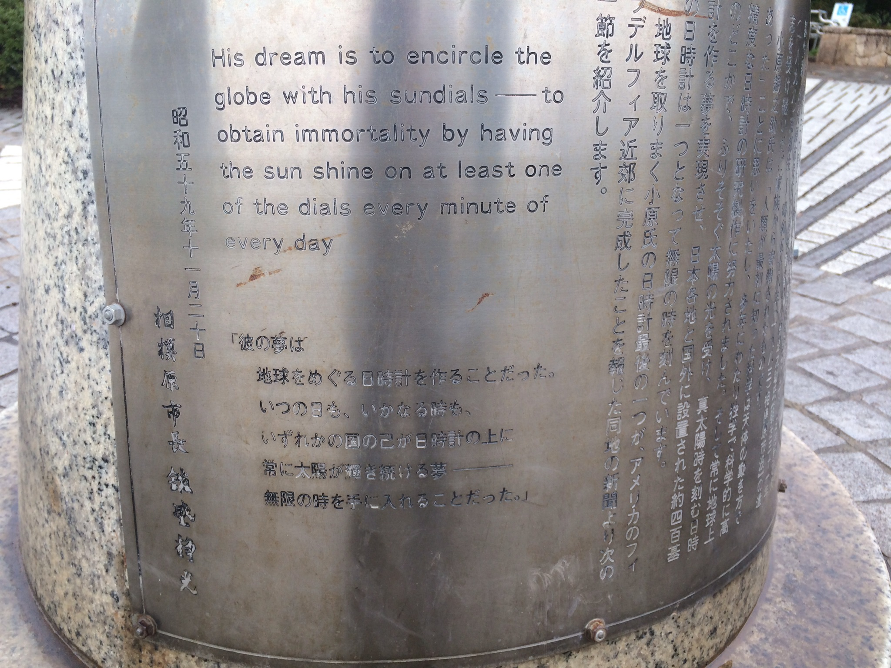

2014/12/30、2つのポータルが確認されています。上溝駅前エリアに「白笹稲荷神社」、相模原駅前エリアに「アガペーキリスト教会」です。


今月12月、相模原駅前エリアにできたポータルといえば「パークレーンズのピン」。これは上記「アガペーキリスト教会」の近くではありますが、一本裏側の通りのようです。

さらにこの裏通りには「相模原駅前郵便局」、そしてそこから線路側には「相模原駅前公園」が増えています。


さらに相模原駅南西側エリアには「相模原四郵便局」、「Sports Spa Athlie(スポーツスパ アスリエ)」の壁面立体看板、それからオートバックス裏に「すこやか公園」が誕生しています。


(12/30確認追記)さらにすこやか公園から16号沿いに「末日聖徒イエスキリスト教会」、清新には「相模原福音キリスト教会」が誕生しています。「#MissionsForGood」キャンペーンで作られた様子。新しいミッションを準備している方がいらっしゃるのかも？


さらに市役所近辺の警察署前交差点に「愛樹の碑」がラーメン屋とともに登場。

また今月は原当麻、下溝エリアに「給水塔」はじめ、一度に4ポータルが出現したそうです。
新規ポータルの申請は今年いっぱいで一旦打ち切られるとのアナウンスがありました。またポータル承認(運営側がXM濃度を手作業で測定するので現状数ヶ月はかかるため。お疲れ様です！)は、エリアごと、一度に行われるようです。
今年も残すところあと2日！
頑張って申請していきましょう！？
P.S. 新春1/4の相模Ingress部初詣イベント、パズドラなどで人気のAppBankさんにも取り上げていただきました。
http://www.appbank.net/2014/12/28/iphone-news/954683.php
ねとらぼ
http://www.appbank.net/2014/12/28/iphone-news/954683.php
Ingress速報
http://ingress.blog.jp/archives/19432501.html
町田経済新聞さん他、記者さんも同行予定です。
参加登録は本日締め切り、初心者・家族連れ大歓迎、町おこしなど興味ある方のご参加をお待ちしております！
登録はこちらから
https://kaitas.github.io/sagami-ingress/event-hatumoude/

プレスリリース：相模原市でIngress初詣イベントを開催
件名：プレスリリース「相模原市でIngress初詣イベント開催」
概要：
2015年1月4日（日）に神奈川工科大学情報学部情報メディア学科白井研究室と相模原市立博物館スタッフを中心とする相模Ingress部が、
Googleの運営するスマートフォンと位置情報を利用したゲーム「Ingress（イングレス）」を使った地域交流イベントを開催します。
本文：
神奈川工科大学情報学部情報メディア学科白井研究室と相模原市立博物館は
協働事業「みんなでつくる相模原『知的探求散策アルバム』」（スマ歩！さがみはら）を推進してきました。
その活動の一環として、博物施設に足を運ぶ機会の少ない若い世代を対象に、
Ingressを絡めることで地域の再発見を目指してもらうことを目的として「相模Ingress部」を組織し、HPやTwitter等のSNSを中心に活動してきました。
この度、その活動の成果ワークショップとして、Ingressプレイヤー向けの初詣イベントを企画しました。
主に中高生などの若い世代や、家族連れに参加していただきたいと考えております。
貴メディアでのご発信をよろしくお願いいたします。
【企画名】
スマ歩さがみはら：ふちのべIngress初詣
【開催概要】
開催日時：2015年1月4日
受付開始：12:30～
開始：13:00～16時終了予定
集合場所：
JR淵野辺駅南口「宇宙兄弟の看板」前
参加費：無料
【申し込み方法】
下記のイベントURLへアクセス、フォームより参加登録
イベントURL：https://kaitas.github.io/sagami-ingress/event-hatumoude/
☆締切り：12月30日 23:59
★先着：10組程度（予定，たくさん集まると増加も検討します）
☆上級者には第一回相模Ingress部アワードも。
★両陣営を対象としたクロスファクションイベントです。
【内容】（予定）
1・ご挨拶交流戦
両陣営を混ぜたクロスファクションイベントになります。
上級者（L8以上）と初心者（L8以下）でチームを構成し、
指定時刻終了まで相模原市内の指定場所で指定ポータルを奪い合います。
通常のプレイ要素に加えて初心者エージェントがどれだけ成長したかも評価します。
勝者にはトレーナーメダル（物理）をプレゼント。
始めて会ったエージェント同士のコミュニケーション能力が試されます。
2・新春初詣Ingressツアー
JAXA（宇宙航空研究開発機構）を擁する相模原市淵野辺を舞台に、Ingressを使った初詣を行います。小惑星探査機「はやぶさ」が消息を絶った際、当時「はやぶさ」のリーダーを努めていた川口淳一郎JAXA教授が「発見祈願」に訪れた新田稲荷神社や、JAXA相模原キャンパス、相模Ingress部の本籍地である相模原市立博物館を訪問します。
3・第1回 賀詞ポータルキー交換会
相模原市立博物館館内で、以下の催しを行います。
・ポータルキー交換会
・相模Ingress部とは
・相模Ingress部クイズ
「ポータル数が最も多い駅は？」、「この図を見て！多重CFいくつ張れる？」、「このポータルはどこにある？」
・第1回相模Ingress部アワード
エージェントステータスから、優秀なエージェントを表彰します。
UPVや歩行距離に加えて、動かんgress（XMリチャージ）など、個性的な賞を設定しています。
・最後は記念撮影
4・調査へのご協力お願い
終了後、Ingressと地域の博物・史跡に関するアンケートにご協力お願いいたします。


追加情報はTwitter、ブログ，各種SNSにて告知いたします。
Twitter： https://twitter.com/ingressbu
ブログ： https://kaitas.github.io/sagami-ingress/
Facebook： https://www.facebook.com/ingressbu
Google+： http://goo.gl/v8rywZ
問い合わせ
相模Ingress部メールアドレス： ingressbu at shirai.la (担当：小瀬)
イベントURL：
https://kaitas.github.io/sagami-ingress/event-hatumoude/
このリリースのURL： https://kaitas.github.io/sagami-ingress/2014/12/24/press-release
関連リンク
http://blog.shirai.la/projects/sumaho/

なぜ相模Ingress部は研究で、相模原市立博物館の活動なのか
相模Ingress部は、Ingressを楽しくプレイする部活動…ではありますが、実はれっきとした神奈川工科大学情報学部情報メディア学科白井研究室の研究であり、相模原市および相模原市立博物館と協働事業として2年がかりで進めてきた事業であります。
こちらにSlide Shareプレゼンテーションを共有します。
http://www.slideshare.net/aquihiko/ingress-42896142
博物館ネットワーク事業：
Ingressを用いた フィールドミュージアムの開発
神奈川工科大学 情報学部 情報メディア学科 白井研究室 小瀬 由樹，美濃部 久美子，木村 知之，白井 暁彦
【補足】
神奈川工科大学白井研究室と相模原市立博物館の協働事業として，相模原市立博物館情報ネットワークセンター事業『みんな でつくる相模原「知的探求散策アルバム」』 (通称：スマ歩さがみはら) みんなでつくる相模原「知的探求アルバム」というプロジェクトがあります．
数年来のテーマであった「津久井エリアを含め，広くなった相模原市．この市域全域をミュージアムにすることはできないか？」という市政側からの要求に，神奈川工科大学の学生と先生で取り組む，協働事業なのです．
平成25年度の協働事業による調査で2000人を対象としたアンケートを実施したところ「 若者世代の来館者が少ないこと」がわかりました．
向井優善，美濃部久美子，小出雄空明，田所康隆，白井暁彦: “博物館ネットワーク事業：相模原市立博物館にはどんな人が来ているか “, 相模原市立博物館 学びの収穫祭 2013, 2013年11月16日.
家族やお年寄りにもアプローチしつつ，パブリックミュージアムの弱点「中高生」，この層をねらいたい！
若者世代に地域の博物への 興味・刺激を与えるきっかけを作るには！？
ということで，調査研究，独自アプリやサービス開発や，展示物開発や写真ワークショップ，「はやぶさの日」応援企画，地元紹介動画地図など様々な活動を通して本活動の課題と方法を明らかにしていきました。
その活動の一角に「相模Ingress部」があります。Google発のベンチャー企業 Niantic Labsが運営する代替現実ゲームであり，我々のプロジェクトとほぼ同時期に開始しています．当時はAndroidだけであり，またUIが英語のみという障壁があり（博物館の多くのお客さんは子供とお年寄りなのです！），独自アプリの開発という方向性で検討していましたが，神社，史跡，ローカルビジネス （ポータル）を使った陣取りゲーム，しかも世界規模で社会実験が行えている点が有利な点でした（我々は初期にGoogle+をつかっていましたが，個人の扱いや仕様変更が多すぎて継続利用には難がありました：「スマ歩さがみはら Google+」）． Ingressには「スマ歩さがみはら」がターゲットとしていた自然や風景は含まれていませんし，XMという未知のエネルギー，SFが含まれていますが，担当の学芸員・木村知之さんが次第にこの世界観を受け入れてくれることにより，より多くの人々が「Ingress部」の活動に参加してくれています．これは主担当の学生・小瀬さんによる「相模とか，部活動とかちょっとダサいほうが参加しやすくていい」というコンセプトが生きていると思います．
先行事例として宮城県石巻市の事例が実施されていたことも我々を勇気づけました．ポータルを利用した名所説明する石川県金沢市 「ビューティーホクリク」なども素晴らしいと思います．
本格的に活動を介した時点で相模原市内にはすでに 700程度のポータルが存在しているました（現在はローソンポータルのおかげでさらに増えています）．このプレゼンテーションでは相模原市のポータル数，オススメ探訪エリア（相模大野，原当麻，小田急相模原，相武台下 ，淵野辺，原当麻エリア）などを実際に足で調査したり，配布物「相模Ingress部員手帳」として配布したりしています．
「世界で最も濃いセル」と言われるPA01-ALPHA-12において、「相模原」は中心にあります。 "Ingress界の東京の中心は相模原"と言っても過言では無いでしょう。 異論は認めます！ http://t.co/tYb1ieKz8w pic.twitter.com/qsp8x4Ps3B
— 相模Ingress部 (@ingressbu) December 20, 2014
ちなみに相模原市立博物館には我々よりももっと先に，ボランティアの街歩き「民俗調査会」が探訪会を実施しています．普段触れることのない”上の世代”，つまりパソコンとかスマートフォンとかを使わない人々との交流や，博物館の展示物である「一遍上人」が祀られる「時宗当麻山無量光寺」や，「狸菩薩」などはすでに親しみがある観光資源（＝知的探求を刺激するターゲット）でした．岡本太郎作「赤い手・青い手」，「県立相模原公園」や「相模大野北口のコリドー街商店街」の銅像などもアートポータルとして紹介されるにつれ，あまり興味がなかった銅像や，神社の鳥居にも詳しくなっていきます．また地元の青勢（お察しの通り，相模Ingress部はなぜか緑が多いです）が強いエリア，例えば上溝エリアやその周辺にあるまるで中高生が立ち上げたかのようなネーミングのポータル群から，そこに生きる人々の様子なども肌で感じられるようになりました． 横山公園にある「芭蕉句碑」というポータルでは，実際に芭蕉の句碑があり，達筆すぎる書で読むことができないのですが，

ポータルの解説に 「陽炎や 柴胡の原の 薄ぐもり」とあり，「柴胡の原」というキーワードから，博物館で活動する「カワラノギクを守る会」（カワラノギクは相模原エリアに咲く絶滅危惧種IB類）のページの一角にであったりと，確実に市域全域をフィールドにした，かつ世代を超えたフィールドミュージアムが体現できていることを感じております（ご高齢の活動者が多いのでHPを維持し続けるのは本当に大変なのです！）
Ingressの動作を乱す太陽フレアについて，天文の学芸員さんとTwitterで絡んだりもします．こんなことは2年前の相模原市立博物館ではありえないレベルのネットワーク活動だと思います．
@ingressbu @scm_sagapon このフレアに伴うＣＭＥが地球方向には放出されていないかもしれませんが、もし地球方向に出ているとすると２，３日後に要注意になると思います。 参考 http://t.co/ipYlVFFX0y
— 山田陽志郎 Yoshiro Yamada (@sinus_iridium) December 20, 2014
最近ではやっとMissionsが使えるようになり（そのためにL9まで必死になってレベル上げていた経緯も…），にこにこ星ふちのべ商店街と連携したMissionsなどもさっそく立ち上げ，商店街やプレイしていただいた方から反響をいただいております．そして2015/1/4の初詣イベントにつながります．
Missionsの公開にも快くご協力いただいた「にこにこ星ふちのべ商店街」さん製作のYouTube動画「HAPPY」 http://t.co/TYIXS8LJJT
— 相模Ingress部 (@ingressbu) December 20, 2014
ローカルINGRESS部か…ゲームの特性からすると地元密着型もよいね。地域開拓にもなるし。探せば厚木近辺もなんかあったりするのかなあこういうの。: 相模Ingerss部 | 潤水都市をXMで満たせ！ http://t.co/TkLY2nKHpR
— かじき＠神奈川 (@kajiki_m) December 20, 2014
https://twitter.com/kogure/status/545773959602388993
卒論としては，この活動を支える技術，例えばまだ現れていないポータルを 先んじてBlogで紹介する技術，Wordpress用のマップ表示プラグイン「photomapper」や，各種SNS（Twitter，Facebook，Google+）との連携技術，運用テクニックの確立，その軸になる「スマ歩“相模Ingress部”さがみはら」作成（ちなみに相模原市立博物館のサイトも白井研究室が開発し，運営軌道に乗せるところまでお手伝いしております）．配布物，

そしてIngressと多重化技術，クラウド技術を使ったサイネージへの展開などが予定されています．ハイカーなどが多い緑区で，デジタルサイネージとWifiスポット，充電などの「ITオアシス」を今年度中に整備していきます（残念ながら，本事業は今年度をもって終了する予定です）．
スマ歩さがみはら:ふちのべIngress初詣。相模原私立博物館のデジタルサイネージでも宣伝させてもらってます！ #Ingress http://t.co/dWAmWf7tsH
— 相模Ingress部 (@ingressbu) December 20, 2014
これらすべてが，研究なのです．情報メディア分野とフィールドミュージアムの研究．
最先端の技術と，人の動きに注目したIT分野の研究です．
小瀬君は頑張ってこの卒論を完成させなければ卒業できません．
（エンタテイメントシステムを研究する白井研究室のそのほかの論文リストはこちらから）
そんなわけで，みなさま，今後とも応援よろしくお願いいたします！
相模Ingress部 世話人 白井暁彦(akilabo:L9)
最後にもう一度宣伝：初詣イベント，ご参加ください！（参加登録は12/30まで）
2015/1/4初詣Ingressイベントの集合場所です／「はやぶさ2を、相模原から宇宙へ。日本の未来はここにある。」日本宇宙少年財団理事長 松本零士／「ムッタとヒビトとともに宇宙に想いをはせよう！」宇宙兄弟×さがみはら pic.twitter.com/GBFZ2AtYKe
— 相模Ingress部 (@ingressbu) December 19, 2014

相模原は東京の中央!?／相模Ingress部オリジナルMissions
2014年10月5日に公開された新機能MISSIONS、これはIngressのポータルを使って独自の冒険を作り出すことができる機能です。
すでにこのサイトでも紹介したとおり、上級プレイヤーに作成機能のテストおよびより幅広いプレイヤーへの公開が始まっており、これを目指してレベル上げに勤しんでいたのでした（一時期忘れていましたが・・・）。
ところで、相模Ingress部がフィールドにしている「PA-01-ALPHA-12」って いうセル（Ingress界の区分）の中央にいるんですね。
スキャナーアプリの上部「INTEL」から「REGIONAL SCORES」を見ると自分のいる位置が表示されます。ついでに自分のランキングも「SEE OTHER AGENTS」で表示できます。

もっとがんばらねば！
特定の地名がどこのセルなのかはこのサイトで調べることができます。
http://ingress-cells.appspot.com/?q=sagamihara
ほら、世界で最も濃いセルのひとつ、の、ど真ん中に相模原はあります。つまりこのセルにおいて「相模原は関が原」、「相模原は東京の中央」なのです！強エージェントさん、巨大なCFなどを張りたいなら、広大な相模原にぜひ！異論は認めます！
さて、軽く荒ぶったところで、相模Ingress部が作成したMissionsの紹介です。
https://twitter.com/ingressbu/status/545904757051629568 https://twitter.com/ingressbu/status/545905593945313281
昨日、Twitterで紹介した「にこにこ星ふちのべ商店街」（商店街監修済！）に加えて、「横山公園」、「はじめてのCF」、「Save “Hayabusa”!!」の合計4件を本日採択確認しました。


しかもすでにクリアした人も8人居るみたい。私は2番目でした！

Save “Hayabusa”!!【相模Ingress部】新田（しんでん）稲荷神社と境内にある呼ばわり山（今熊（いまくま）神社）がいま、静かに注目を集めている。小惑星探査機「はやぶさ」が消息を絶った際、当時はやぶさのリーダーを務めていた川口淳一郎JAXA教授が「発見祈願」に毎夜訪れ、その後発見されて感動の帰還を果たしたからだ。知的探究心でXMパワースポットを訪れよう！
「Save “Hayabusa”!!」はJAXA内もルートに入っており、見学必須（臨時休館日の案内が掲載されていない場合は、土日祝日問わず9時45分～17時30分の時間帯で見学可）。 途中にクイズも設定されており難度高いです（クイズも英語対応）。
最後はもちろん、我らがIngress部の本籍地・相模原市立博物館がゴールです！
これで初詣イベントでこれを使って遊べますね！クリアすると部謹製バッジももらえます。
まだまだ至らないことも多いと思いますので、改善ご意見あればTwitterまでお寄せください。
というわけで「スマ歩さがみはら：ふちのべIngress初詣」参加者募集中です。定員充足もしくは12/30ごろ締め切ります。


相模Ingress部初詣イベント「スマ歩さがみはら：ふちのべIngress初詣」告知！
今回はTwitterにて先んじて報告していた「スマ歩さがみはら：ふちのべIngress初詣」の告知を行いたいと思います。
※最新情報およびご紹介はこちらのURLでお願いいたします↓
https://kaitas.github.io/sagami-ingress/event-hatumoude/
開催日時：2015年1月4日
受付開始：12:30～
開始：13:00～16時終了予定
集合場所：
JR淵野辺駅南口「宇宙兄弟の看板」前
2015/1/4初詣Ingressイベントの集合場所です／「はやぶさ2を、相模原から宇宙へ。日本の未来はここにある。」日本宇宙少年財団理事長 松本零士／「ムッタとヒビトとともに宇宙に想いをはせよう！」宇宙兄弟×さがみはら pic.twitter.com/GBFZ2AtYKe
— 相模Ingress部 (@ingressbu) December 19, 2014
【申し込み方法】 以下のフォームより参加登録をお願いいたします（2014/12/30締め切り予定） 「スマ歩さがみはら：ふちのべIngress初詣・参加申し込みフォーム」 http://j.mp/sagamingress20150104 ↑G+使えない人も対象ですのでフォームの入力を忘れずに。 ★先着：10組程度（予定，たくさん集まると増加も検討します）
☆初心者対象の両陣営を混ぜたCross Factionイベントになります。L8以上のプレイヤーで新年会＆参加者のレベル上げをサポートするボランティア参加を歓迎します！上級者特にレジスタンス側のボランティアしていただける方を強く募集しております！

【内容】
1・Ingress初心者支援&観光
参加者の方は下記のコースをスタッフと共に観光していただきながら、行く先々でハックやレゾ挿し、CF作成のいろはを学んだりして、ちゃっかりレベルを上げてしまおうという企画です。
両陣営を混ぜたクロスファクションイベントになります。L8以上のプレイヤーは新年会＆参加者のレベル上げをサポートするボランティア参加を歓迎します！
予定コース：淵野辺駅前→鹿沼公園→新田稲荷＆呼ばわり山→相模原市立博物館→銀河の森
2・新春賀詞ポータルキー交換会
めずらしいポータルキーを交換しましょう！ポータルキーがありすぎて困るエージェントさんは、博物館に収蔵（ドロップ）していきましょう。
3・相模原Ingressアワード発表会
世界でもっとも濃いセル，の中心にある相模原の頂点，超上級プレイヤーさんを表彰します！
4・調査へのご協力お願い
終了後、Ingressと地域の博物・史跡に関するアンケートにご協力お願いいたします。
本イベントは相模原市市民恊働事業：相模原市立博物館情報ネットワークセンター事業 みんなでつくる相模原「知的探求散策アルバム」 （略称「スマ歩さがみはら」）の協力を得て実施しております。
以上です。
相模Ingress部Darsana小隊 活動レポート
リアルタイムではこちら
告知！
ingressbu: 相模Ingress部は初詣イベントの実施を決定しました！ 日付は1月4日。初心者参加者と両陣営のボランティアを募集予定です。詳細は後日発表いたします。よろしくお願いします！ #Ingress
— 相模Ingress部 (@ingressbu) December 13, 2014
Ingressの開発者、ジョン・ハンケ氏と記念写真を撮影して頂きました！ #darsanaTokyo #ingress pic.twitter.com/SQy7oAt5BQ
— 相模Ingress部 (@ingressbu) December 13, 2014
相模Ingress部と 部活動に興味ある方は 有楽町で逢いましょう。 明日の朝、9:00ごろ、 集合場所である日比谷野外音楽堂にポータル巡りながら集合します！ #ingress #darsanatokyo
— 相模Ingress部 (@ingressbu) December 12, 2014
相模Ingress部 部員手帳Ver.1.00 ローソンポータルアノマリー以前の多重化マップ入り。 明日名刺代わりに配布しますね pic.twitter.com/GaBaiy4HMU
— 相模Ingress部 (@ingressbu) December 12, 2014
相模Ingress部、作戦準備中です。 分析の結果、明日は恵比寿ガーデンプレイスから開始し、観光しながら進撃予定です！ #darsanatokyo #ingress pic.twitter.com/un61X5fM0v
— 相模Ingress部 (@ingressbu) December 12, 2014
こんばんは
Ingressの開発者、ジョン・ハンケ氏と記念写真を撮影して頂きました！ #darsanaTokyo #ingress pic.twitter.com/SQy7oAt5BQ
— 相模Ingress部 (@ingressbu) December 13, 2014
アフターパーティーのVJ/DJを担当された真鍋大渡さんと。 Ingress開発APIを使用してリアルタイムでIngressの世界とパーティー会場をフュージョン、カッコよかったです！ 年末も某歌合戦でお忙しいと思いますが頑張って！ pic.twitter.com/9AlitpkU1L
— 相模Ingress部 (@ingressbu) December 13, 2014
Darsana小隊のPostmotemです。 カレー食べながら新年の「相模原初詣アノマリー(仮)」の企画会議や珍ポータル交換会など。 #ingress #DarsanaTokyo pic.twitter.com/ERgWhppvxP
— 相模Ingress部 (@ingressbu) December 13, 2014
その他素晴らしい写真たち。
企画”記念の日時計”を探せ！
日時計が、相模原市に何個あるか、探してみませんか？
これは相模原市水郷田名、高田橋のものです。
淵野辺駅南口、公民館前に設置されているものです。
緑ヶ丘中学校横には大きい日時計があります。この近所には幾つかポータルがあります。
やたらとあるこの日時計は「小原式日時計」というそうです。これは「横山公園」で発見しました。相模原市の小原銀之助氏の寄贈とあります。

相模Ingress部「Darsana小隊」結成！
みなさんこんにちは！
2014/12/13(土)、きたるXM異常現象「Darsana東京」に向け、
相模Ingress部では以下の活動を予定しています。・部員の連絡手段の確保（ハングアウト「相模Ingress部Darsana小隊」立ち上げ）
・特製腕章の貸し出し(Tシャツやパーカーでは寒いので)
・部員手帳の配布
・ポストモーテム(事後振り返り，という名の交流会)の実施
・moves(iPhone,android)による歩行経路の記録
・集合場所の共有
・イベントの記録
・初詣イベントの模索(イベントを作れる人が出来たらなおよし)などを考えております。
また、部員の定義などがあいまいなので、今回の小隊のみの参加ということでも歓迎です。
ハングアウトに参加希望の方はGoogleアカウントをメール「ingressbu at shirai.la」やTwitter@ingressbu までDMでお送りください。
活動にご参加いただける方も募集しております。
興味のある方はTwitter@ingressbu宛にDMをお願いいたします。以上です！今後の情報はこちらのページに追記していきます！
（企画：エージェントglolo）

宇宙航空研究開発機構JAXA
今回は宇宙クラスタなら知る人ぞ知るあの施設
宇宙航空研究開発機構JAXA 相模原キャンパスへ行って参りました！
Ingress的には意外なものがポータルになっているようです。


JAXA施設内で屋外展示されているロケット(ロケットの名前はミューファイブ…の前にある「M3-S」)やUFO型のモニュメントが「UFO」としてポータル登録されています。
さすが宇宙！といったところでしょうか。周辺には「相模原市立博物館」などもあり(もちろんポータルです)、CF作成も難しくないので見学ハックしていくこともおすすめです。
もちろんJAXAも見学可能。
施設内研究管理棟ではロケット達の歴史や機構を知ることができ、
あのはやぶさの実物大模型も展示されています！JAXAが組織される以前、ISAS/NAL/NASDAといった組織が一つになる前から開発されてきたロケットたちの軌跡。

イオンエンジンやサンプル採集装置を間近で見ることができました！
(解説があるので何も知らなかった自分でも楽しめました)天候の関係で延期になってしまいましたが、JAXAは近々はやぶさ2の発射を予定しております。
是非この機会に応援ハック！以上です。
(記者 エージェントglolo)
マップ


{kind=link}
{kind=link}
{kind=link}
{kind=link}
{kind=link}
{kind=link}
{kind=link}
{kind=link}
{kind=link}
{kind=link}
{kind=link}